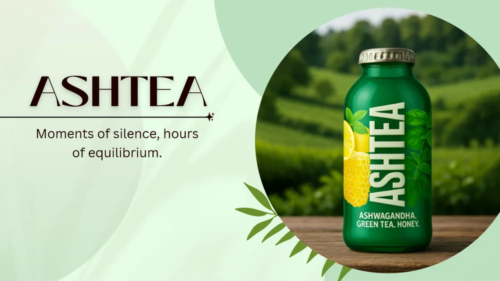

Profile
Information Management / Operations / IT Projects
Information Management student with experience in international client communication, operations coordination, and IT-related university projects. Currently focused on project management, business systems, IT implementations, and practical process optimization.
Capabilities
Tools / Direction / Education
2024 — Present
Coursework includes Databases, Information Systems Design, ERP Systems, Business Process Modeling, Statistical Data Analysis, IT Project Management, Computer Networks & Cybersecurity, Object-Oriented Programming, Web Development, and Intelligent Management Systems.
2023 — 2024
Academic program in internal security.
2019 — 2023
Completed high school education in Warsaw.
Experience
Operations / Communication / Coordination
Jul 2025 — Dec 2025 · Hybrid
Work
Projects / Systems / Analysis
Personal academic Android project focused on improving university organization and productivity with schedules, notes, exams, deadline tracking, student support tools, and OCR-based schedule import.
View on GitHub — University Life Management Android Application
PDF · 15 pagesUniversity business project involving market analysis, product concept development, branding strategy, and marketing planning.
University ERD and database project supported with Microsoft Access, covering customer management, orders, parts tracking, and relational structure design.
Designed UML system plans for a cat cafe management system and a computer club management system.
This site. Static, dependency-free portfolio built as a desktop-style shell, with the resume content server-rendered for search engines and a no-JavaScript fallback.
GitHub — Personal CV / Portfolio WebsiteContact
CV / Links / Availability
Open to conversations around business systems, project coordination, IT implementations, and practical technology-driven process improvement.